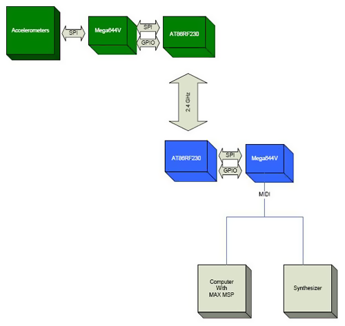
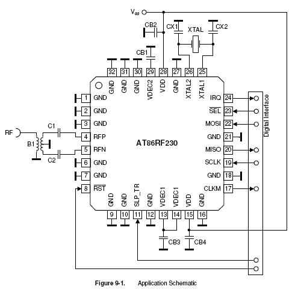
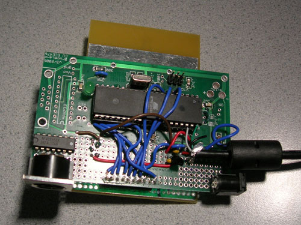
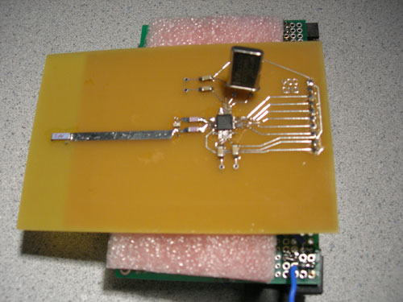
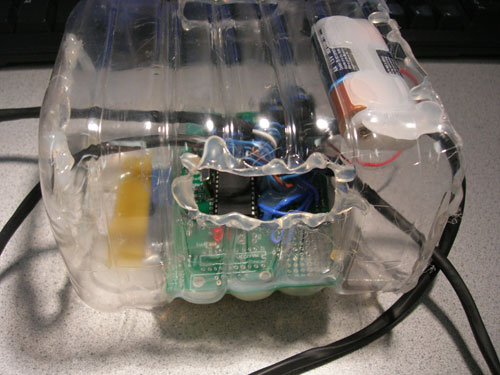
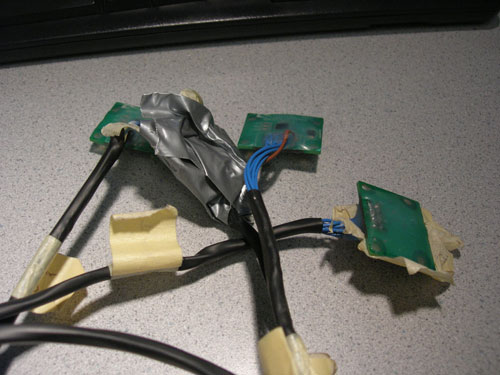
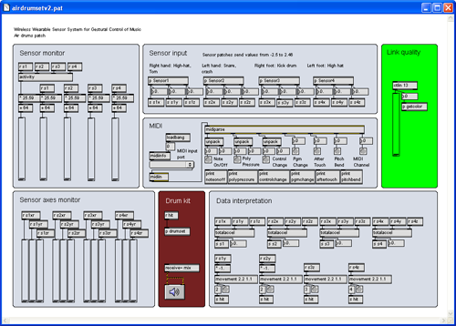

Movement to Music
A Wearable Wireless Sensor System

Andrew B. Godbehere
abg34@cornell.edu
Nathan J. Ward
njw23@cornell.edu
School of Electrical and Computer Engineering
Cornell University
Ithaca, New York USA
ECE 476: Digital Systems Design Using Microcontrollers
Lab 6: Design Project
April 2007
Table of Contents
Introduction
In this digital age, new interfaces for musical expression provide much broader musical possibilities than have ever existed before. There is a constant quest to be in harmony with one’s instrument so that music can flow freely from the imagination and take form effortlessly. This sparks an interest in new ways to interact with instruments, because we may be able to achieve more fluid methods for creating music. There are many new digital musical interfaces, but most are based on traditional musical instruments or are at least designed as a tangible object. This project aims to eliminate the physical “instrument” altogether. The sensor system enables the use of one’s own body as a musical instrument through detection of movement, freeing the artist from traditional requirements of producing live music. The ability to create and manipulate sound through movement provides the potential for immediate intuitive control of musical pieces.
Dance and music are quite obviously intertwined. One seems empty without the other. Dance and music deserve a close relationship, with no strings attached. The goal of this project is to blur the line between the two, and open up an avenue for them to mingle more intimately. Instead of dancing to music, it is now possible to create music by dancing. This project is a tool, an interface between motion and music, a new musical instrument. It is designed to be highly configurable to allow the artist as free a form of expression as possible. It is also designed to be fun and comfortable to use. This is a powerful tool and a fun toy.
High Level Design
This project implements a wireless, wearable sensor array which operates fast enough to generate MIDI (Musical Instrument Digital Interface) data in real-time based on the user's motions. Four sensors attached to one's body wirelessly send data to a MIDI host. The system is designed to be flexible, so it can be attached to a personal computer (PC), digital audio workstation (DAW), or stand-alone synthesizer, sampler, etc, and configured at will as an air guitar, input to an algorithmic composition, moshing interpreter, a live soundtrack to your daily life, or any other scheme you can imagine.
User Interface
The user attaches four accelerometers and a wireless transmitter to his or her body to detect movement, which is used as input to the system producing music as an audio output. By wearing these sensors, the user gains physical control over musical parameters such as volume, pitch, timbre, and tempo through movement and dance. In addition to continuous control of musical aspects, the system can recognize gestures made by the user. Gestures can trigger musical events like playing an audio sample or non-musical events like switching between modes of operation. Multimodal operation is in fact a key design aspect to ensure maximum flexibility, so that the user can make decisions on the fly about what aspects of the musical piece to control and what types of movement control them. During a performance, mobility and independence is essential, so the user’s only input via this system is through the accelerometers. The design is such that all operations can be performed with no human-computer interface other than the wearable sensors.
Functions
An emphasis is placed on flexibility so that the sensor system may be used in multiple contexts. Therefore, the system can be configured for multiple modes of operation.
First, the system provides the ability to either create or manipulate music. The former mode of operation allows the user to essentially act as a solo instrument. The later mode allows real-time modification a musical piece played by either a computer or another live musician, much like a conductor uses movement and gestures to give direction to the performance of a piece.
Secondly, the system allows for either direct or indirect mapping of sensor data to musical parameters. The former mode of operation maps mostly unprocessed sensor data to musical parameters. The later provides a layer of algorithmic interpretation between sensor input and musical output, allowing the user to control musical parameters through cumulative multi-sensor movements.
There are many possibilities for configurable modes of operation, but the following table details the designations described above and lists some examples.
| Category | Create | Manipulate |
|---|---|---|
| Direct mapping | The user’s body is the musical instrument, with body movements directly creating sound. | The user’s movements are directly mapped to parameters of a musical piece, played either by a live musician or computer. |
| Example | Raising an arm could sound a note whose pitch depends on the acceleration of the arm movement. | A collaborative scenario could consist of someone playing an instrument while a dancer directly manipulates the timbre of the instrument through sensor-controlled filters. |
| Indirect mapping | The user’s movements control the creation of music via a selectable processing algorithm. | The user’s movements as a whole influence the performance of a piece of music. |
| Example | Overall arm movements could be pitch input and leg movements volume input to an algorithmic composition with dissonance input based on whether the arms or legs were doing similar movements. | Overall acceleration of all sensors could increase the tempo of a predetermined piece. |
System Level
This project is constructed with an embedded system and a general-purpose computer or other MIDI host like a synthesizer. The embedded system is composed of wearable accelerometers and a radio frequency (RF) transmitter run by the first microcontroller unit (MCU), with the RF receiver run by the second microcontroller that also generates MIDI output. The MIDI data is then used as input to a host program on a personal computer (PC) for further data interpretation and audio generation. Although using a PC as the MIDI host is a more flexible option, the design of the embedded system is able to act as a standalone MIDI controller for interaction with other industry standard MIDI equipment. The following diagram describes the system from a high level.

The green blocks represent hardware that is worn by the user. This may be referred to as the "dancer-side" hardware. The blue blocks represent the hardware that composes the base-station. The base station has a MIDI port which can connect either directly to a synthesizer or to a computer with a program such as Max/MSP. The base station is capable of basic motion analysis and is capable of sending MIDI note-on and note-off commands to control a synthesizer. However, for maximum flexibility, a program such as Max/MSP is required. When using the program, the base station sends commands containing raw data from the accelerometers in the form of Control Change MIDI messages. The dancer-side hardware communicates with the base station via a 2.4GHz wireless link.
Hardware Design
Sensors
The logical sensor choice for detecting motion are accelerometers. Kionix, a company specializing in accelerometers, provided us with samples of their KXP74-1050 tri-axis accelerometers. As dance requires the motion of the arms and legs, we decided upon a system using four accelerometers, one for each limb. Placing these accelerometers around a human body, however, requires a lot of cable. To minimize the cable lengths, we placed the rest of the dancer-side electronics in a central location, around the belt-line. As the accelerometers communicate via a Serial Peripheral Interface (SPI) capable of operating up to 5MHz, the line length may limit the operating speed of the SPI interface. The ATmega644V MCU is configured as the SPI bus master and the accelerometers are configured as slaves. The MCU periodically cycles through each of the accelerometers and records the instantaneous acceleration of each sensor. The measurements are taken very regularly to allow for the analysis of the motion through time.
Wireless
With the intent to create a dance-operated musical instrument, we realized that a wired system would be cumbersome and would detract from the overall experience. Connecting a wire to a dancer would also be dangerous, allowing the possibility for the dancer to trip. In order to make this system work well, it must be wireless. Before deciding upon a wireless link, we did a rough analysis to estimate the required data transmission rate for the wireless link. During the analysis, we kept in mind the necessity for a fast, responsive, and highly configurable system.
The data is intended to be used for motion capture or analysis, and as such, a fairly rapid sample rate is required. The human body, however, is not capable of moving at high frequencies, so a sample rate of around 60 Hz seems sufficient as a base minimum. To minimize noise and the amount of data required to be transmitted, only the most significant bits from the accelerometers are used. As we are using approximately one byte of data from each axis of each accelerometer, 12 bytes are required for each sample. At a sample rate of 60Hz, this comes to a minimum required baud rate of 5760 bps. The Radiotronix radios (RCT-433 and RCR-433), which are cheaply available and relatively easy to interface (thanks to Meghan Desai), fall short of this requirement and operate around 2400 bps. In reality, an even faster wireless link than 5760bps is required to allow the microcontroller sufficient time to gather samples from the accelerometers. The next cheapest radios happen to be Atmel radios, the AT86RF230. They have several large benefits including an impressive baud rate of 250kbps and a simple SPI interface. They require very few external components, a rare trait among 2.4GHz radios. Operating at 2.4GHz, they are within the global unlicensed band, requiring no special considerations to obey FCC regulations. However, the AT86RF230 radios pose several large challenges. No interface board is available for a reasonable price, which forced us to design our own board for the radios. Also, the package is a very tiny 32 lead QFN (Quad flat no-lead package) with a lead-pitch of 0.5mm, making hand-soldering tricky.
Due to the importance of the quality of the wireless link for this project, a lot of design work was put into the hardware for the AT86RF230. The circuit built is taken directly from the application schematic included in Atmel's datasheet for the AT86RF230, http://www.atmel.com/dyn/resources/prod_documents/doc5131.pdf.

The bill of materials (BOM) for the circuit includes a 100 ohm to 50 ohm balun transformer. The RF output of the radio is a balanced output, but a balun allows for the use of a single-ended antenna.
The layout for a circuit operating at 2.4GHz was a tricky task. The book "EMC and the Printed Circuit Board" by Mark I. Montrose was used heavily as a reference while making the design. The area of particular concern was the connection to the antenna. A Linx CHP series antenna was used due to its extremely low profile, but the antenna requires an area of a ground-plane in order to operate properly. The ground plane must be clear underneath the antenna, however. As the radio is physically separated from the antenna, a microstrip transmission line was designed to connect the radio to the antenna. The microstrip is designed to be 1/2 wavelength long at 2.45GHz and 50 ohms for a PC board with no silkscreen, a copper thickness of 1.7 mils, and an FR4 board thickness of 62 mils. A microstrip transmission line impedance calculator was used to aid in the design. The calculator is called AppCAD by Agilent and can be found free of charge at http://www.hp.woodshot.com. The board was purchased from ExpressPCB and designed with software provided by ExpressPCB. The footprint of the AT86RF230 was designed using the JEDEC standard J-STD-020C as a reference. The pad lengths were extended substantially to allow for hand soldering. The completed layout is depicted below.
The schematic corresponding to this design is depicted below. The connector is designed with a 0.1" spacing, suitable for a breadboard or a Bruce Land PCB. Note that the AT86RF230 requires its own crystal oscillator for proper frequency accuracy and stability to ensure operation in the worldwide unlicensed frequency band, between 2400 MHz and 2485 MHz. C1 and C2 are also 0805 surface mount 12pF capacitors and are not available in lab, but are very inexpensive when purchased from Digikey.
Dancer-side Hardware
The RF transceiver circuit is identical on both the dancer-side and the base-station. The dancer-side schematic shown below describes the SPI connections between the MCU and the accelerometers and transceiver. The transceiver's extra control signals, connected to MCU general purpose input/output (GPIO), are also shown below. The light-emitting diode (LED) is used to indicate whether or not RF communication is active. The bank of capacitors by the accelerometers is required for noise immunity. These capacitors were provided with the accelerometers on interface boards provided by Kionix. The circuit runs off of battery power, and requires 2 1.5V AA batteries.
Base Station Hardware
The base-station schematic is diagrammed below. This circuit requires a 5V power supply. As it draws less than 100mA, this power can be easily provided directly from a USB port. We stripped an old USB cable to provide power to our circuit. The MIDI OUT circuit was built from the MIDI Manufacturers Association (MMA) MIDI Electrical Specification Diagram, which describes the electronic specifics of the MIDI standard. While the MIDI OUT circuit requires 5 volts, the rest of the components run off of 3 volts, so a 3V regulator is used. The regulator used is an inexpensive linear regulator. Like with the dancer-side hardware, an LED is used to indicate whether or not wireless communication is active. MIDI is controlled from the UART (universal asynchronous receiver/transmitter). Only the TXD port of the UART is required for our one-way outgoing MIDI communication. A DIN-5 connector is used to connect MIDI cables to the circuit, which is the standard for MIDI ports, although only 3 of the 5 pins are connected to the circuit.
After constructing all the hardware, most worked very well. The biggest problem encountered was with the SPI connections to the accelerometers. The cables used are rather long, and at 4MHz, the lines were far too noisy. After slowing the SPI communication rate for the accelerometers to 500KHz, we could communicate clearly. For a better product, better cables would be used, which would include shielding and twisted pairs of wires, to limit cross-talk. Transmission-line matching techniques may also be used to limit reflections on the lines.
Software Design
The software is split into two projects (written in C with the HP InfoTech CodeVisionAVR IDE): one for the base station and another for the dancer-side hardware. Each peripheral (AT86RF230 transceivers, MIDI, KXP74 accelerometers) has its own C include file (AT86RF230.h, MIDI.h, KXP74.h). The details of the interface are included in the header files, allowing for simple code in the main programs. The header files are designed for modularity and the functions are written to provide simple access to powerful functionality. As an example, a wireless transmission consists of calling a couple functions to get the radio in the proper state, loading the data to send into a variable (transmit_frame) and calling "transmit_frame()". This code break-down leads to easy-to-manage and easy-to-debug code.
Accelerometer Data Acquisition
The KXP74 accelerometers use an SPI interface to communicate with the MCU. They are slaves for synchronous SPI with MOSI (Master Output, Slave Input), MISO (Master Input, Slave Output), SCLK (Serial Clock), and CS (Chip Select) pins. Five CS signals on the MCU are used to select one of the five SPI slaves (four accelerometers and one transceiver) with which to communicate. The MCU steps through successive sensors before communicating with the transceiver to send the acquired data. Reusable functions were created for SPI initialization, setting SPI clock phase/polarity (because the settings are different for the sensors and the transceiver), and initializing the sensors to the proper mode by writing to internal sensor registers. Finally, the main function is able to sample data from an accelerometer's ADC by using sensor number and axis as parameters. After sending the command to initiate conversion of an axis value in the first SPI byte, this function must wait a minimum of 40us to give the A/D conversion enough time to complete before receiving the second and third bytes containing the 12-bit accelerometer value. The overall accelerometer SPI sequence is as follows: power up KXP74, CS low to select, write operational mode command to 8-bit control register, CS high for at least 200ns (i.e. SCLK <= 5MHz), CS low to select, send convert axis command over MOSI, wait a minimum of 40us between the first and second bytes in order to give the A/D conversion adequate time to complete, read in the 12-bit ADC data on the second and third MISO bytes, CS high for at least 200ns, and repeat data read cycle for x-axis, y-axis, z-axis of each of four accelerometers.
Wireless Link
The AT86RF230 radios also offer a simple SPI interface. SPI messages are used to write to registers in the radio to change its operating state and to upload and download frames. The radio takes care of all the signal encoding and detection and delivers data in chunks called "frames." A few extra control lines are required, and are referred to as the GPIO signals. These signals allow the microcontroller to reset the radio, send a quick command to instruct the radio to transmit a frame, and to allow the radio to send certain interrupt messages back to the microcontroller. The latter is used to indicate when a frame has been successfully transmitted or when a frame has been successfully received. The radios are also transceivers, capable of both transmitting and receiving.
The AT86RF230 radios are designed for IEEE 802.15.4 compatibility. For the purposes of this project, a simpler transmission/reception scheme is used, though the code could be extended to be fully 802.15.4 compatible. The transmission scheme is not particularly robust, as any radio transmitting in the particular frequency band will be received; there is no addressing scheme to prevent interference from other radios. A wireless transaction is initiated by the base station, which sends a short frame consisting of one command byte. The dancer-side radio, upon reception of the frame, immediately transmits a data frame back to the base-station. The dancer-side MCU samples the accelerometers at a rapid rate, independent from the radio transmission. The base-station coordinates the wireless communication so it receives samples at a fairly regular rate.
The details of the interface between the radio and the MCU, including required delay times between radio state transitions, is included in the AT86RF230 datasheet.
MIDI Transmission
MIDI functions were written to initialize the UART for asynchronous operation with 8-bit frames at 31.25kBaud as well as send various types of messages. This project primarily used MIDI Control Change messages to send raw accelerometer data, Note On messages, and Note Off messages. Control Changes messages enable the sensors to act as a MIDI controller, which is an abstraction of hardware used to control a performance but not necessarily directly related to note-on/note off events. As per the MIDI spec, these types of messages all consist of three bytes of data: a status byte, followed by two data bytes. The status byte always specifies the message opcode and MIDI channel number. For Note On/Off messages, the second byte is the key (note) number and the third is the velocity. For Control Change messages, the second byte is the controller number and the third byte is the controller value. Because the second and third bytes always begin with a zero, the transmitted data is 7 bits with an unsigned range of 0-127. Functions were written to determine the status byte and send Control Change messages as well as Note On messages and Note Off messages given variable parameters. #define statements were used extensively throughout our code making it easy to, among other things, reference note pitches for MIDI on/off messages.
Max/MSP Host Program
When the base station is configured to send accelerometer data as MIDI Control Change messages, a host program on the computer can be used to interpret movement and output audio. The Max/MSP graphical programming language was used as a development environment to design MIDI host programs due to its focus toward creating interactive software for music and multimedia. The root set of capabilities for the program includes MIDI monitoring, inputing the sensor data for each axis of the four accelerometers as 12 control streams (as well as a 13th for wireless link quality), providing a graphical representation of the acceleration of individual axes as well as total sensor accelerations, and a visual indication of wireless link quality (ranging from green to red). Modular patches were written for data interpretation including inclination calculations (with inverse trigonometric functions to calculate pitch (x), roll (y), and z-axis tilt), total sensor acceleration, and total activity. The total sensor acceleration patch was written to be used for detecting overall acceleration of a sensor as well as for use in in inclination error control; if the total acceleration of a sensor increases much more than 1g, there are forces other than gravity acting on it and inclination calculations are no longer valid. Patches were also written for movement/gesture recognition. Movements are generally treated as discrete events that occur when a data stream increases above a configurable threshold (and can only reoccur after decreasing below another specified threshold). The gesture patch was written for combining multiple movements, so the overall gesture occurs after a first movement is followed by a second movement within a time-frame. These events can then trigger anything. A simple example could be a rightward gesture (y-axis) switching a sensor from playing a drum (i.e. triggering samples with downward movements in the z-axis) to playing a cymbal. For our project demonstration, we created an air drum set that detects downward motion that plays a drum sample when the hand or leg playing the drum stops moving downward (as if the user hit the imaginary drum). All of these patches can be combined and expanded upon in any way to create new custom instruments and schemes of operation.
On-board Motion Interpretation
In another configuration of the base station MCU, data interpretation is performed on-board and MIDI Note On/Off messages are send as opposed to Control Change messages. In this stand-alone example of the project, the idea is to play a 2-note power chord when the user stomps their right foot, add in a third note when the left foot is added, and control the chord by sweeping the right hand through space. The pitch of the third note to be added to a chord is set by the tilt of the left hand. To summarize all these motions to be interpreted, there is a "stomp," a "lateral sweep," and a "tilt."
A stomp is detected by using acceleration from one axis. When the instantaneous acceleration in that axis exceeds a certain threshold, a stomp condition is registered. When this condition is observed, a timer starts which must time out before a new stomp can be detected. This debounces the user's stomp.
The tilt is simply the raw data from one axis of the accelerometer and is used directly as a musical parameter, to control pitch, for example. This is susceptible to motions such as jumping, when there is extra acceleration besides the earth's gravity which is affecting the accelerometer, but this makes for an interesting musical effect.
The lateral sweep gesture is rather tricky to interpret. A motion in one direction is difficult to distinguish from a tilt, as both elicit a change in the acceleration in the axis of interest. The distance the arm moves and the speed at which it moves is to be used to change the chord, which would require an integration. This is approximated by detecting when the motion starts and when the motion ends, and using the time between the events to change a parameter. For a lateral sweep, the instantaneous acceleration and instantaneous jerk (change in acceleration) are used. When both the acceleration and jerk exceed set thresholds, the motion is initiated. Like the stomp, this motion must be debounced, as the human arm may tend to oscillate slightly before starting a motion in any direction. The motion is stopped after the debounce timer times out and when the instantaneous jerk is close to zero. At this point, the hand is likely to be at rest, and the user is done changing the chord. When the motion is started, a global variable is set to either +1 or -1, depending on the direction. At a regular interval, this variable is added to the chord parameter to change the parameter, either positively or negatively. When the motion stops, the global variable is reset to 0, preventing further change to the chord parameter.Results
The overall project works surprisingly well, especially considering the hand-soldered amateur-designed 2.4GHz radio board. The wireless link performs very strongly, and has a decent range (upwards of 100 feet indoors). The wireless link was still strong while spanning the entire distance of the lab with many people and electronic equipment running. The sample rate is very fast when the base station is configured to send out raw accelerometer streams. When motion-processing is performed on the base-station, the sample rate slows down a bit, but is still sufficiently fast to generate music in real-time with no noticeable delay. Using Max/MSP, air-drums work very well. The drums were played exactly when they felt like they should be played, with no repeated or accidental hits. The processing done on the microcontroller worked decently well, allowing an enjoyable experience, though a little difficult to control. The lateral-sweep motion is a little tricky to use, but when the user moves just right, the motion can be executed repeatedly with a decent amount of accuracy.
One problem encountered with the initial design was the battery power on the dancer-side hardware. Initially, a 3V coin cell battery was used, but during operation, the voltage from the cells sagged quickly. With a fresh cell, the circuit would only operate properly for 5 minutes or so before failing. After switching to AA batteries, however, we have observed constant operation times upwards of 5 hours. This battery scheme works much better and makes for a potentially practical consumer product.
Although there can be occasional interference in the wireless link, this is very uncommon and easily curable with a little further development. A slightly more sophisticated wireless protocol utilizing addresses would not impact the sampling rate of the system and would limit interference significantly.
Conclusions
Overall
In many ways, our design met our expectations. In terms of the quality of the wireless link, this design greatly exceeded our expectations. We were able to demonstrate both direct mapping and indirect mapping between motion and music and were able to balance these mappings to create a unique musical instrument that is powerful and genuinely fun to play. Motions elicit sounds in real-time and in a highly correlated manner, which allows the user to enjoy the system without becoming frustrated with a lack of control. With the quality of our wireless link, the device will work well in a concert setting, allowing the artist to move around a stage freely with no noticeable delays in music generation.
The hardware is not particularly robust, but can withstand vibrations caused from moderate jumping. It would be nice if the wires we made were longer, which would allow a full range of motion for tall people and provide the option to secured cables to the user's limbs, minimizing tangling. The wireless communication, by virtue of the AT86RF230 radio, is FCC CFR-47 Part 15 compliant. It is not 802.15.4 compatible, but with the AT86RF230 radio, this is feasible for the future.
With marginal hardware upgrades, we are confident that this would make a good product, judging from the excited reactions we received from many people. The idea is quite possibly patentable, though we found, after some research, that other people have had similar ideas. Our project will likely see its performance debut in a live concert setting in the near future, and we will take its future from there.
Standards
Because our electronic device is intended to be worn by the user, several ANSI standards may apply. A non-exhaustive list is as follows:
- CISPR 14-2 Ed. 1.1 b:2001: Electromagnetic compatibility - Requirements for household appliances, electric tools and similar apparatus - Part 2: Immunity - Product family standard
- Electromagnetic Compatibility EMC (IEC)
- Protection Against Electric Shock (IEC)
- IEC 62209-1 Ed. 1.0 b:2005: Human exposure to radio frequency fields from hand-held and body-mounted wireless communication devices - Human models, instrumentation, and procedures - Part 1: Procedure to determine the specific absorption rate (SAR) for hand-held devices used in close proximity to the ear (frequency range of 300 MHz to 3 GHz)
Ethical Considerations
The initial idea for the project involved dancing to be used in order to generate or manipulate music. Dance, however, is beyond the physical capability of a portion of the population. While pursuing our design and including the ability to use dance to manipulate music, the system was developed to be highly configurable and extensible. Using Max/MSP, the user may operate the device in almost any imaginable manner. Any conceivable motion can be used to generate music, and any number of accelerometers may be used for that purpose. The device can be operated while standing up, while exercising vigorously, while sitting down, while lying down, etc.
The mechanical construction of the device is currently not acceptable for public use. It is not adjustable in any way for persons of different heights, and there exists the possibility of becoming tangled in the wires while moving around. In a commercial application, the sensors would be attached with detachable cables, preventing tangling or strangulation. Cables would also have a mechanism to attach to limbs securely without constricting the user's range of motion.
Appendices
Code
at86rf230.h
kxp74.h
midi.h
receiver_linked.c
receiver_linked_standalone.c
transmitter_linked.c
activity.pat
airdrumset.pat
angle.pat
movement.pat
totalaccel.pat
Bill of Materials
| Description | Manufacturer | Manufacturer No. | Vendor | Vendor Number | Quantity | Unit Price | Total |
|---|---|---|---|---|---|---|---|
| ATmega644 + AT86RF230 | Atmel | ATMEGA64RZAV-10PU | Digikey | ATMEGA64RZAV-10PU-ND | 2 | 9.72 | 19.44 |
| 2.4GHz Antenna | Linx | CHP-series | Digikey | ANT-2.45-CHPCT-ND | 2 | 1.51 | 3.02 |
| Prototype Board | Bruce Land | 2 | 5.00 | 10.00 | |||
| Balun | Johanson Dielectrics | 2450BL14B100S | 2 | sampled | 0.00 | ||
| Tri-axis digital accelerometers | Kionix | KXP74-1051 | Kionix | KXP74-1051 | 4 | sampled | 0.00 |
| MIDI jack | CUI Inc | SDS-50J | Digikey | CP-7050-ND | 1 | 0.90 | 0.90 |
| 0805 12pF capacitors | Digikey | 4 | 0.50 | 2.00 | |||
| Various Discretes | 1 | 1.00 | 1.00 | ||||
| AA batteries | 2 | 1.00 | 2.00 | ||||
| AA battery holder | Radioshack | 1 | 1.50 | 1.50 | |||
| 3V regulator | STMicroelectronics | LE30CZ | Digikey | 497-1528-ND | 1 | 1.05 | 1.05 |
| Inverter | Texas Instruments | SN74LS04N | Digikey | 296-1629-5-ND | 1 | 0.56 | 0.56 |
| MIDI-USB interface | previously owned | 0.00 | 0.00 | ||||
| USB Cable | previously owned | 0.00 | 0.00 | ||||
| Recycled Ocean Spray Juice Container | previously owned | 0.00 | 0.00 | ||||
| Microkorg synthesizer | previously owned | ||||||
| Total: | 41.47 |
Tasks
MIDI - Nathan
Accelerometers - Nathan
PC software and motion analysis - Nathan
MCU motion analysis - Andrew
RF circuit design and construction - Andrew
Wireless code - Andrew
Cable/enclosure construction - Andrew
References
Montrose, Mark I. EMC and the Printed
Circuit Board: Design, Theory, and Layout Made Simple.
New York: IEEE Press, 1999.
Chang Kai, Inder Bahl, and Vijay Nair.
RF and Microwave Circuit and Component
Design for Wireless Systems.
New York: Wiley, 2002.
MIDI Manufacturer's Association: http://www.midi.org
Atmel Mega 644V: http://www.atmel.com/dyn/resources/prod_documents/doc2593.pdf
Atmel AT86RF230: http://www.atmel.com/dyn/resources/prod_documents/doc5131.pdf
Kionix KXP74-1050: http://www.kionix.com/Product-Specs/KXP74-1050%20Specifications%20Rev%204.pdf
Johanson Dielectrics 2450BL14B100S Balun: http://www.johansontechnology.com/products/rfc/blct/JTI_Balun-2450BL14B100_12-03.pdf
Linx CHP antenna: http://rocky.digikey.com/WebLib/Linx%20Technologies/Web%20Data/ant-2.4-chp-dg.pdf
Images
Base Station: 
2.4GHz Transceiver: 
Dancer-Side enclosure: 
Accelerometers: 
MIDI host program written with Max/MSP: 